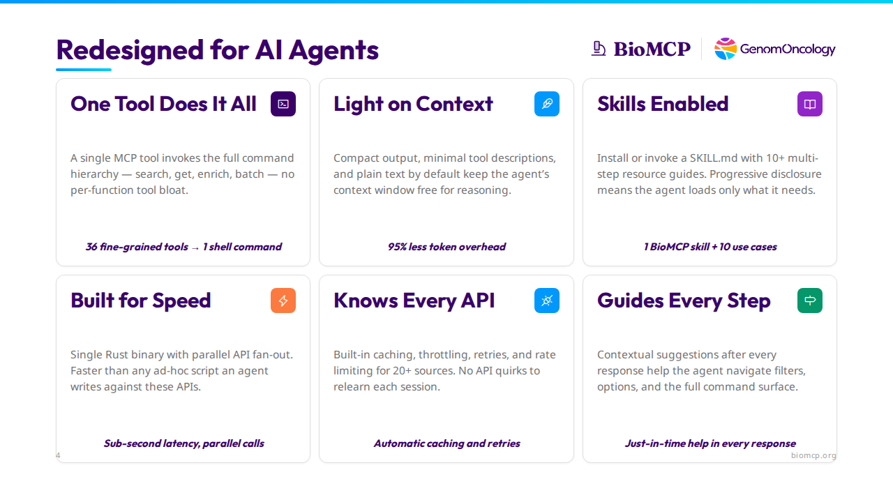

We Deleted 35 Tools and Our Agent Got Better¶
What rebuilding a biomedical data tool taught us about designing for AI agents.
TL;DR: We replaced 36 MCP tools with one CLI command and cut context window overhead by 95%. The agent got faster, cheaper, and more accurate. Here's what we changed and what's generalizable.

The Landscape Shifted¶
We built the first version of BioMCP in spring 2025. Sonnet 3.7 was the best model you could get. Claude Code had just shipped as a beta nobody was using. The Model Context Protocol had been announced a few months earlier and we were all still figuring out what to do with it. Skills didn't exist. Most open-source models needed hand-holding through every tool call.
A year later, the conversation has changed. Peter Steinberger — creator of OpenClaw, now the most-starred project in GitHub history — put it bluntly on Lex Fridman's podcast: "Every MCP would be better as a CLI." Mario Zechner, creator of Pi (the coding agent OpenClaw builds on), wrote an entire post making the case — his browser tools README is 225 tokens; the equivalent MCP servers consume 13,000–18,000.
They're not wrong. We learned the same lesson the hard way.
The Problem¶
BioMCP connects AI agents to 20+ biomedical databases — PubMed, ClinVar, ClinicalTrials.gov, gnomAD, OpenFDA, and more — covering 12 entity types from genes and variants to clinical trials and adverse events. The original Python version worked, but it was fighting the agent at every turn.
36 tools ate the context window. Every MCP connection loaded all tool descriptions — article_searcher, trial_getter, variant_searcher, and 33 more — consuming ~16,600 tokens before a single query. That's 8% of a 200K context window gone on tool signatures alone.
Mandatory scaffolding wasted round-trips. A think tool forced a planning step before every real query. Reasonable for spring 2025 models that genuinely reasoned better when forced to plan. Unnecessary for today's models, which plan internally.
Verbose output burned tokens on formatting. A trial search that should cost 400 tokens cost 1,600 — indented blocks, nested labels, metadata nobody needed. Multiply by a dozen queries per session.
The Python version was built for early-2025 models. Those models improved faster than our scaffolding, and the scaffolding became the bottleneck.
Here's what changed: models went from needing a forced planning step to planning internally. They went from struggling with 36 tool signatures to handling a single command grammar natively. The think tool that helped Sonnet 3.7 reason? It just wastes a round-trip for Opus. The 36 tool descriptions that taught the agent what was available? They eat 8% of the context window before a single query runs. The scaffolding that once helped the model now hurts it — and the model can't tell you that, it just quietly gets slower and more expensive.
Where it compounds¶
A single lookup is a clean comparison, but the real payoff is multi-step. A researcher asks: "What's the clinical significance of BRAF V600E and what are the treatment options?"
Old version: think → variant_searcher → variant_getter → trial_searcher → trial_getter → drug_searcher. Six tool calls, five round-trips, ~6,000 tokens of output. The agent spends most of its context window on formatting, not reasoning.
New version: The agent runs get variant "BRAF V600E", sees the contextual suggestion variant trials "BRAF V600E", follows it, then runs get drug vemurafenib. Three commands, three round-trips, ~1,100 tokens of output. Each response tells the agent where to go next. The savings aren't additive — they compound with every step.
What We Changed¶
1. One tool does it all¶
The old version was an MCP server that happened to have a CLI. The new version is a CLI that happens to serve MCP — one tool called biomcp that proxies the full command hierarchy:
## Patterns
- `search <entity> [query|filters]` - find entities
- `get <entity> <id> [section...]` - fetch by identifier
- `batch <entity> <id1,id2,...>` - parallel gets
- `enrich <GENE1,GENE2,...>` - gene-set enrichment
## Helpers
- `variant trials <id>`
- `gene articles <symbol>`
- `drug adverse-events <name>`
The tool description is auto-generated from CLI help at build time, so it can never drift from reality. Context cost: ~800 tokens. Down from 16,600.
We still support MCP — local stdio and remote server modes — but the MCP server is now a thin proxy over the CLI. You don't have to choose. Build the CLI first, serve it over MCP second.
The general principle: Don't shatter a natural grammar into individual function signatures. Today's models handle a single tool with a command grammar — and you save thousands of context tokens.
2. Light on context¶
The old version returned everything for every query in verbose indented blocks. The new version is deliberately minimal: compact tables instead of nested labels, plain text by default, and named sections so the agent pays only for the depth it needs.
biomcp get gene BRAF → summary card (~200 tokens)
biomcp get gene BRAF pathways → + Reactome pathways
biomcp get gene BRAF civic → + CIViC evidence
biomcp get gene BRAF all → everything (~2,000 tokens)
Every command also supports --json for agents that parse structured data. Same data, two formats, every command. The goal is simple: keep the agent's context window free for reasoning, not formatting ceremony.
The general principle: Return less by default, let the agent ask for more. Agents are good at iterating; they're bad at filtering 5,000 tokens down to the 200 that matter.
3. Skills enabled¶
Some questions need 4-6 commands across different entities — "What's the clinical significance of this variant and what are the treatment options?" BioMCP ships a single SKILL.md with 10+ multi-step investigation guides, exposed as MCP resources for agent discovery:
01 variant-to-treatment Variant → ClinVar → CIViC → Trials → Drugs
04 rare-disease Phenotype → Disease → Gene → Variant → Trial
08 drug-safety-review Drug → FAERS → Labels → Recalls → Interactions
The agent reads the skill once and executes the workflow. Progressive disclosure means these resources only get loaded when the agent needs them — if the agent isn't using BioMCP for a given task, it doesn't pay the context cost. You get the best of both worlds: a highly efficient tool with guided workflows that only get recruited when needed.
The general principle: Design your tool description as carefully as your API. For agents, the tool description is the interface — it's the only thing the model reads before deciding how to use your tool. Auto-generate it from source if you can, so it never drifts.
4. Built for speed¶
The rewrite to Rust wasn't about language preference. Agent sessions are interactive — the human is watching. A 2-second API call feels instantaneous. A 10-second one feels broken.
A single Rust binary with async parallel API fan-out means a search all that hits 8 APIs completes in the time of the slowest single call, not the sum. No runtime, no virtual environment, no dependency conflicts — install and first query in under 60 seconds:
Claude Desktop config is three lines of JSON. Faster than any ad-hoc Python or TypeScript script an agent could write against these same APIs.
The general principle: Every dependency is a support ticket. Every configuration step is a user who gives up. If the agent's human can't get your tool running in 60 seconds, they'll use something else.
5. Knows every API¶
BioMCP talks to 20+ biomedical APIs, each with their own quirks — rate limits, pagination schemes, authentication patterns, response formats. The agent shouldn't have to relearn any of this.
Built-in 24-hour disk cache means repeat queries are instant. Per-source rate limiting with token-bucket throttling ensures the agent never sees a 429. Automatic retries handle transient failures transparently. The agent never knows rate limits, retries, or caching exist — it just gets fast, reliable responses every time.
The general principle: Handle infrastructure transparently. If you let a 429 bubble up, the agent will waste tokens reasoning about retry logic instead of doing its job.
6. Guides every step¶
Every command output ends with contextual suggestions — not generic help, but specific next steps based on what the current response contains:
Use `get variant <id>` for details.
Use `variant trials "BRAF V600E"` for recruiting trials.
Filters: -g <gene>, --significance <value>, --max-frequency <0-1>
The agent doesn't memorize the command surface. Each response teaches it where to go next — which filters are available, which cross-entity helpers apply, what deeper sections exist. Contextual suggestions after every response help the agent navigate filters, options, and the full command surface.
The general principle: End each response with contextual follow-up actions. The agent shouldn't re-read the tool description to figure out its next move. This is especially high-leverage for tools with large command surfaces.
Results¶
| Metric | Python (v0.7) | Rust (v0.8+) | Change |
|---|---|---|---|
| Tool descriptions loaded | 36 tools, ~16,600 tokens | 1 tool, ~800 tokens | 95% reduction |
| Variant lookup output | ~1,400 tokens | ~350 tokens | 75% reduction |
| Trial search output | ~1,600 tokens | ~400 tokens | 75% reduction |
| Round-trips per query | 3-4 (think + search + get) | 1 | 70% fewer |
| Median entity lookup | 2-5 seconds | 500ms-1s | 4-5x faster |
| Install requirements | Python + pip + 12 deps | Single binary | Zero deps |
| MCP config | pip install + venv + JSON | 3 lines of JSON | 60 seconds |
Accuracy improved too¶
Fewer tokens isn't just cheaper — it leaves room for the model to reason. We validated BioMCP against 7 published biomedical papers, checking every factual claim the agent made against source databases. The result: 90% accuracy score with zero hallucinations. Every fact traced back to ClinVar, ClinicalTrials.gov, or another primary source. When the agent has context to spare, it reasons better — it cross-references instead of summarizing, it catches inconsistencies instead of glossing over them.
The Checklist¶
If you're building tools for AI agents — in biomedicine or anywhere else — here's what we learned:
- One tool, not many. Don't shatter a natural grammar into individual function signatures. Models handle a command hierarchy; save thousands of context tokens.
- Return less by default. Let the agent ask for more. Agents are good at iterating; they're bad at filtering 5,000 tokens down to the 200 that matter.
- Design the tool description like an API. It's the only thing the model reads before deciding how to use your tool. Auto-generate it from source so it never drifts.
- Every dependency is a support ticket. If the agent's human can't get your tool running in 60 seconds, they'll use something else.
- Handle infrastructure transparently. If you let a 429 bubble up, the agent will waste tokens reasoning about retry logic instead of doing its job.
- End each response with next steps. The agent shouldn't re-read the tool description to figure out its next move.
The common thread: get out of the model's way. The scaffolding that helped last year's models is the bottleneck for this year's.
Try It¶
Install BioMCP and run your first query in under a minute:
Or connect it to Claude Desktop:
Then ask: "What's the clinical significance of BRAF V600E and are there recruiting trials near Cleveland?"
BioMCP is open source and MIT licensed — github.com/genomoncology/biomcp